Suporte Avançado de Vida Cardiovascular (ACLS) segundo a AHA
Abordagem sistemática, conduta de tratamento e diretrizes atualizadas para o manejo da parada cardiorrespiratória e outras emergências cardiovasculares. Importante resaltar que o Suporte Avançado de Vida abrange duas situações extra e intra-hospitalar a depender de qual a situação que envolve a PCR algumas condutas mudam.
O Suporte Avançado de Vida Cardiovascular (ACLS) consiste em um conjunto de condutas clínicas e protocolos estabelecidos pela American Heart Association (AHA) para o tratamento urgente de paradas cardiorrespiratórias (PCR), arritmias letais, acidente vascular encefálico (AVE) e síndromes coronarianas agudas. O objetivo central é restabelecer a circulação espontânea e preservar a função neurológica intacta, sendo uma habilidade essencial para enfermeiros em unidades de atendimento pré hospitalar, unidade de terapia intensiva e em emergência.
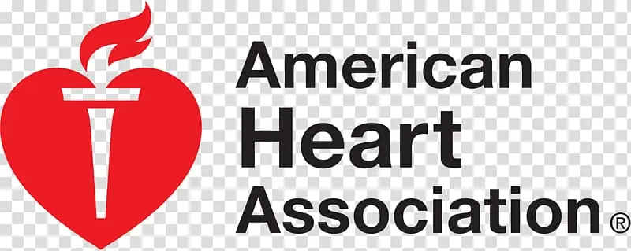
O Suporte Avançado de Vida em Cardiologia (ACLS) é um conjunto de diretrizes baseadas em evidências para o atendimento de emergências cardiovasculares graves.
• O que é: Atendimento avançado de paradas cardiorrespiratórias, arritmias, infarto e AVC, com uso de vias aéreas, medicações e desfibrilação.
• Ano de criação e entidade: Criado em 1974 pela American Heart Association (AHA).
• Revisão periódica: Atualizado periodicamente, com revisões principais a cada 5 anos.
• Quem pode fazer? Voltado para médicos, enfermeiros e profissionais de emergência.
• O que são os Algoritmos? São protocolos em fluxogramas que orientam a conduta rápida e organizada.
A certificação do ACLS é válida por 2 anos, sendo necessária recertificação.
Reconhecimento da Deterioração Clínica e Prevenção
Estudos demonstram que a maioria das paradas cardiorrespiratórias intra-hospitalares (PCRI) não são eventos súbitos e inesperados, mas sim o resultado final de uma deterioração fisiológica progressiva que pode durar horas. A identificação precoce desses sinais é o primeiro elo da Cadeia de Sobrevivência intra-hospitalar.
O papel do Enfermeiro: A vigilância contínua e a correta interpretação dos sinais vitais são fundamentais. O uso de escores de alerta precoce padroniza a comunicação.
Protocolo NEWS 2 (National Early Warning Score): Ferramenta que pontua parâmetros como frequência respiratória, saturação de O2, temperatura, pressão arterial sistólica, frequência cardíaca e nível de consciência.
Time de Resposta Rápida (TRR): Equipe multidisciplinar (médico, enfermeiro, fisioterapeuta) acionada para intervir à beira do leito diante de sinais de deterioração (ex: NEWS ≥ 5 ou 7), prevenindo a evolução para PCR.
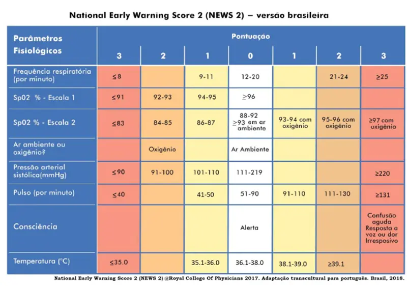
Reconhecimento e Manejo Inicial da Parada Cardíaca
Se a prevenção falhar e o paciente entrar em colapso, o reconhecimento imediato é vital.
A avaliação deve ser feita em menos de 10 segundos.
Passos Críticos do BLS no ACLS:
Verificar Responsividade:
Chame o paciente e estimule (toque nos ombros).
Chamar Ajuda:
Acione o código azul/equipe de emergência e solicite o Carrinho de Parada/Desfibrilador.
Checar Pulso e Respiração:
Verifique o pulso carotídeo e a respiração (gasping ou ausente) simultaneamente por no máximo 10 segundos.
Iniciar RCP de Alta Qualidade:
Se sem pulso, inicie compressões torácicas (100-120/min, 5-6cm profundidade).
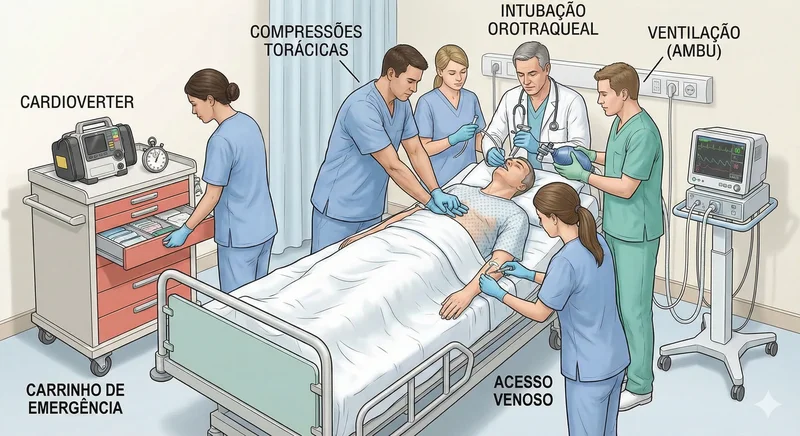
Papel do enfermeiro durante a PCR/Código Azul:
O enfermeiro em hipótese alguma deve sair do quarto do paciente durante a PCR.
Inicialmente sua função é delegar corretamente para distribuir a mão de obra e garantir cobertura total na assistência ao paciente.
O enfermeiro pede para chamar ajuda fora do quarto de outros técnicos, solicita a presença do médico e do fisioterapeuta, além de pedir o prontuário e a prescrição médica do paciente.
Simultaneamente, realiza junto à equipe as primeiras tomadas de decisão:
Pedir para ligarem o cronômetro e sinalizarem em voz alta a cada 2 minutos
ligar o cardioversor e deixa-lo em modo monitor
Garantir kit de intubação funcionando próximo à cabeça do paciente + farmacos;
Solicitar montagem do circuito de vácuo e aspiração de VAS + AMBUZAR;
Garantir acesso venoso de grande calibre + coletar sangue e gasometria;
Deixar epinefrina aspirada identificada, coberta e disponível + seringa de salina;
Delegar duas pessoas para as compressões torácicas;
Manter gluconato de cálcio, magnésio, potássio e insulina lacrados, próximos e disponíveis;
Solicitar aquecedor portátil;
Solicitar Desligarem o ar-condicionado do quarto;
Solicitar Aquecimento de soluções fisiológicas;
Após ajustado o fluxo do atendimento assumir uma tarefa fixa.
Há muita coisa para o enfermeiro fazer durante a PCR.
O enfermeiro jamais abandona o quarto do paciente.
Avaliação Primária do ACLS (ABCDE)
Realizada enquanto a equipe de alto desempenho executa a RCP. O foco é garantir a eficácia da reanimação e suporte fisiológico básico. É importante ressaltar que no Suporte Básico de vida a sequência ABCDE será seguida rigorosamente nestes passos, todavia em pacientes hospitalizados a Circulação (C) por meio das compressões torácicas na evidência da PCR será iniciada imediatamente.
A (Airway) - Vias Aéreas
Manter vias aéreas pérvias, elevação de mento, aspiração orotraqueal. Em PCR, via aérea avançada tubo orotraqueal é crucial. O técnico de enfermagem deverá verificar e testar as laminas de laringoscopio e se as pilhas do cabo do laringoscópio não estao descarregadas. Este material junto com os tubos orotraqueais, luva estéril, fio guia, boguie, sistema de aspiração de prontidão e AMBU ligado ao oxigenio devem estar próximo a cabeça do paciente e a cama do paciente deve estar afastada da parede .
B (Breathing) - Respiração
Administre oxigênio a 100% através do AMBU. Evite ventilação excessiva (pode reduzir o retorno venoso). Se via aérea avançada inserida: 1 ventilação a cada 6 segundos (10/min) sem interromper compressões.
C (Circulation) - Circulação
A profundidade recomendada para compressões torácicas em adultos durante a RCP é de pelo menos 2 polegadas (5 cm), não excedendo 2,4 polegadas (6 cm). A frequência deve ser de 100 a 120 compressões por minuto, garantindo o retorno total do tórax. Frequência: 100 a 120 compressões por minuto (Use o monitor multiparâmetros para verificar se a frequencia está sendo efetiva, jamais use o oximetro de dedo como parâmetro) Garanta acesso IV/IO. Monitore qualidade da RCP (Capnografia maior que 10mmHg). Desfibrilação se indicado (TV e FV), e em caso de Assistolia ou AESP o emprego de epinefrina IV deve iniciar imediatamente junto as compressões torácicas.
D (Disability) - Neurológico
Aplicação da Escala de Coma de Glasgow. Verifique glicemia capilar para descartar hipoglicemia.
E (Exposure) - Exposição
Exponha o tórax para RCP e pás. Procure sinais de trauma, sangramento, fístulas ou dispositivos médicos.
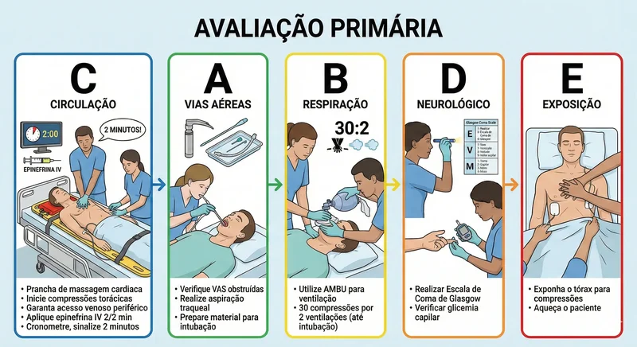
Avaliação Secundária (Diagnóstico Diferencial)
Consiste na busca ativa pelas causas prováveis da PCR. Enquanto o líder comanda o código, um membro da equipe deve coletar o histórico focado na avaliação secundaria (AMPLA) para isso tenha em mãos prontuário do paciente e ultimos exames de laboratorio.
Mnemônico AMPLA
A
AlergiasVerifique se o paciente possui alergias medicamentosas e alimentares, se apresentou alguma reação ao medicamento.
M
MedicamentosProcure saber pela prescrição médica os medicamentosque o paciente esta fazendo uso, última dose, queixas ao administrar os medicamentos se extra hospitalar possíveis intoxicações também devem ser investigadas (ex: betabloqueadores, opioides).
P
Passado MédicoHistórico cardíaco, renal, diabetes, cirurgias recentes, tratamento de depressão, uso de entorpecentes.
L
Líquidos / IngestãoÚltima refeição (risco de broncoaspiração), estado de hidratação e possiveis liquidos toxicos ingeridos pelo paciente.
A
Ambiente / EventosObservar o ambiente ao redor é de suma importância, verifique ao redor: cartelas de comprimidos vazias, ferramentas de corte contuso, arma de fogo, substâncias ilícitas etc...O que aconteceu antes do colapso? (Dor torácica, trauma, febre) Verifique com o acompanhante ou o técnico de enfermagem e leia a anotação de enfermagem, se for extra hospitalar colha informações com algum familiar que esteja presente .
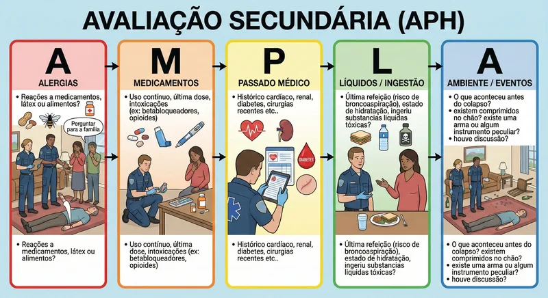
Algoritmo de PCR: Ritmos Chocáveis
Ocorre quando há atividade elétrica caótica (FV) ou organizada mas rápida demais (TVsp). O tratamento definitivo é elétrico.
RCP (2 min): Reinicie compressões imediatamente após o choque. Não cheque pulso logo após o choque.
Epinefrina (1mg): A cada 3-5 min (após o 2º choque).
Amiodarona: Antiarrítmico de escolha para FV/TV refratária (após 3º choque). Dose ataque: 300mg bolus. Dose repetição: 150mg.
Lidocaína: Alternativa à Amiodarona (1-1.5 mg/kg).
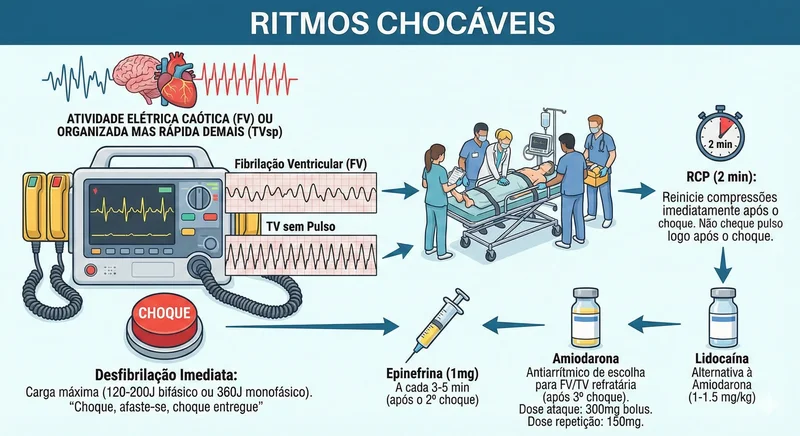
Traçado de ECG — Ritmos chocáveis (FV/TV sem pulso)
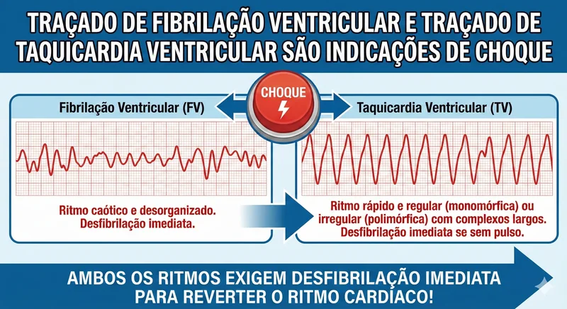
Taquicardia Ventricular e Fibrilação Ventricular
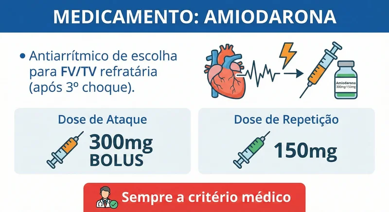
Amiodarona na conduta de FV/TV refratária (Que nao respondeu a outras intervenções médicas)
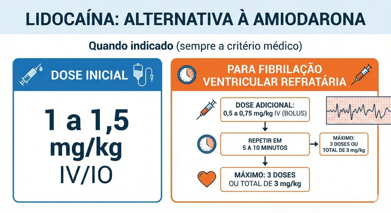
Lidocaína — alternativa à amiodarona (quando indicado)
Algoritmo de PCR: Ritmos Não Chocáveis
Inclui a Assistolia (linha reta) e a AESP (qualquer ritmo organizado sem pulso palpável). O choque não funciona aqui.
Assistolia / AESP
RCP Imediata: Foco em compressões de alta qualidade e mínimas interrupções. As compressóes cessam a cada 3 minutos rapidamente para verificação do pulso central, na ausência reinicia-se as compressões toracicas. O enfermeiro delega 2 técnicos de enfermagem para revezar a cada 3 minutos as compressões
NÃO CHOQUE: O choque apenas lesiona o miocárdio sem reverter o ritmo.
Epinefrina (1mg): O enfermeiro delega ou assume o carrinho de parada. Prioridade máxima na aspiração da epinefrina. Administre assim que tiver acesso venoso periférico. Repita a cada 3-5 min. Aumenta a pressão de perfusão coronariana. Oresponsável pelo carrinho de emergencia durante o código azul cronometra o tempo desde o inicio da parada e sinaliza em voz alta toda vez que der 3 minutos.
Via Aérea Avançada (Intubação): O médico é responsavel pela intubação orotraqueal precoce para melhorar a ventilação e capnografia, mas para isso é importante que o técnico de enfermagem, enfermeiro ou fisioterapeuta aspire as vias aéreas do paciente antes da intubação. O fisioterapeuta fica responsavel por configurar o ventilador mecânico e "AMBUZAR" até a acoplação do circuito do ventilador
Protocolo da Linha Reta (CA-GA-DA) "Não é uma pegadinha" CABOS GANHO/CALIBRAÇÃO DADERIVAÇÃO: Antes de confirmar assistolia, cheque:
1. Cabos conectados?
2. Ganho do aparelho máximo?
3. Derivações (Checar em mais de uma, ex: D2 e V1).
3. Pode estar ocorrendo interferência nos eletrodos, cabo danificado, descolamento dos eletrodos. Certifique-se que tudo esta funcionando corretamente para nao criar falso alarme
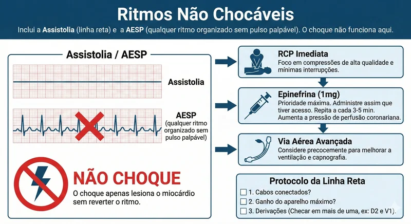
Diagnóstico Diferencial: As Causas Reversíveis
Durante os ciclos de RCP, a equipe deve revisar mentalmente e vocalmente os 5 Hs e 5 Ts. Tratar a causa raiz é muitas vezes a única forma de obter sucesso na RCP.
Os 5 Hs
1. Hipovolemia: Perda de volume (sangue ou fluidos). Sinais: FC alta pré-parada, hipotensão. Tratamento: Fluidos rápidos, sangue.
2. Hipóxia: Falta de oxigênio. Tratamento: Ventilação eficaz, O2 a 100%, tubo orotraqueal.
3. Hidrogênio (Acidose): Sépse, cetoacidose. Tratamento: Bicarbonato de sódio (em casos específicos), hiperventilação controlada.
4. Hipo/Hipercalemia: Distúrbios do potássio. Tratamento HiperK: Cloreto/Gluconato de Cálcio, Insulina+Glicose. HipoK: Reposição de K+ e Magnésio.
5. Hipotermia: Paciente frio. O coração não responde bem a drogas/choque. Tratamento: Reaquecimento ativo interno e externo.
Os 5 Ts
1. Tensão (Pneumotórax): Colapso pulmonar hipertensivo. Sinais: Desvio de traqueia, murmúrio ausente. Tratamento: Descompressão com agulha (toracocentese).
2. Tamponamento Cardíaco: Líquido no pericárdio. Sinais: Tríade de Beck (Hipotensão, Jugular turgida, Bulhas abafadas). Tratamento: Pericardiocentese.
3. Toxinas: Overdose de drogas (opioides, tricíclicos). Tratamento: Antídotos específicos (Naloxona, etc) e suporte.
5. Trombose Coronariana (IAM): Infarto agudo. Causa mais comum. Tratamento: Angioplastia (ICP) imediata pós-RCE.
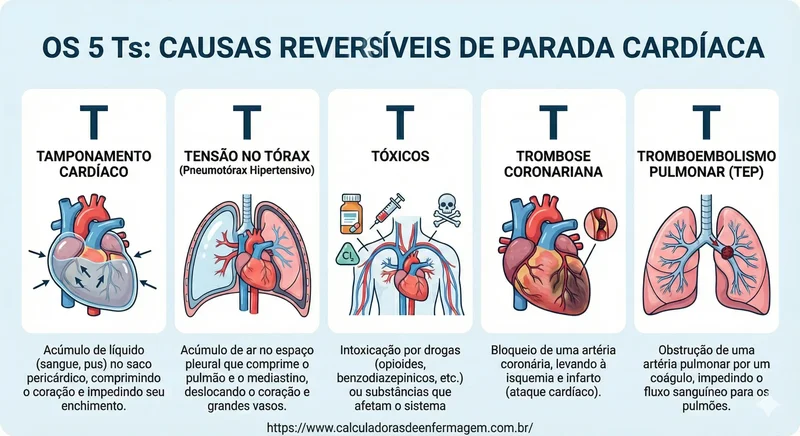
Cuidados Pós-Ressuscitação (Pós-PCR)
O retorno da circulação espontânea (RCE) não é o fim, mas o início de uma fase crítica de estabilização para mitigar a lesão cerebral secundária e disfunção de múltiplos órgãos.
Controle Direcionado de Temperatura (TTM): Manter temperatura central entre 32°C e 36°C por pelo menos 24 horas em pacientes que não obedecem a comandos. Isso reduz o metabolismo cerebral e a inflamação.
Ventilação e Oxigenação: Evite hiperóxia (que causa radicais livres). Mantenha SpO2 92-98% e PaCO2 normal (35-45 mmHg).
Hemodinâmica: Trate a hipotensão agressivamente com fluidos e vasopressores (Norepinefrina) para manter Pressão Arterial Média (PAM) > 65 mmHg.
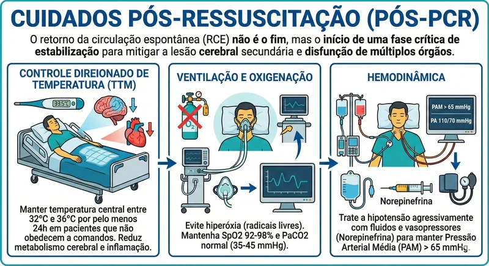
Referências Bibliográficas:
PEREZ, M. R.; ALKHAWATAM, L. ACLS (Advanced Cardiac Life Support). [S.l.]: StatPearls Publishing, 2024. Disponível em: https://www.ncbi.nlm.nih.gov/books/NBK613285/. Acesso em: 01 fev. 2026.
AMERICAN HEART ASSOCIATION. 2020 American Heart Association Guidelines for Cardiopulmonary Resuscitation and Emergency Cardiovascular Care. Circulation, v. 142, n. 16_suppl_2, p. S337–S357, 2020.
MERCHANT, R. M. et al. Part 1: Executive Summary: 2020 American Heart Association Guidelines for CPR and ECC. Circulation, 2020.